Эта статья предназначена как введение в фундаментальные основы физики ультразвука для врачей без технической или математической подготовки. Базовые знания о физических принципах, лежащих в основе ультразвуковых исследований, даст лучшее понимание практических ограничений в методиках, используемых для дианостики с помощью ультразвука, и более четкое представление о причинах и проблемах артефактов изображения. Технический или математический опыт не нужен, все выкладки будут интуитивно понятно и проиллюстрированы. Понимание основ работы наноэлектронных приборов также полезно для получения общего представление об эхокардиографии в целом.
Ультразвук является обычной звуковой волной, так же как и слышимые нами звуки. Хотя некоторые физические свойства зависят от частоты, основные принципы одинаковы. Звук состоит из волн сжатия и разрежения передающей среды (transmitting medium) (например, воздуха или воды), путешествующего с фиксированной скоростью. Звук является примером продольной (longitudinal) волны, колеблющейся вперед и назад в сторону движения звуковой волны. В свою очередь поперечные (transverse) волны колеблются в противоположном направлении относительно распространения волны (Как пример - поверхностные волны на воде или электромагнитное излучение).
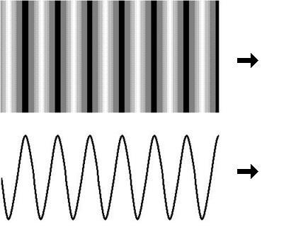 Рис. 1. Схематическое представление продольной (сверху) и поперечной (снизу) волнВолна переносит энергию, но не материю. В отличие от электромагнитных волн (свет, радиоволны и т.д.) для распространения звука необходима среда — он не может распространяться в вакууме. Как и все волны, звук можно описать рядом параметров: частота, длина волны, скорость распространения в среде, период, амплитуда и интенсивность. Частота, период, амплитуда и интенсивность определяются источником звука, скорость распространения — средой, а длина волны — и источником звука, и средой.
Частота (frequencies) — это число полных колебаний (циклов) за период времени в 1 секунду (рис. 2). Слышимый диапазон звука изменяется от 15 до 20 МГц, в то время как диагностический ультразвук изменяется в диапазоне 1 - 12 МГц.
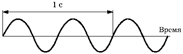 Рис. 2. Волна с частотой 2 цикла в 1 с = 2 ГцПериод (Period) — это время, необходимое для получения одного полного цикла колебаний (рис. 3)
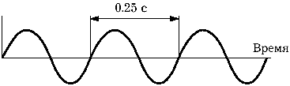 Рис. 3. Период ультразвуковой волныДлина волны (wavelength) — это длина, которую занимает в пространстве одно колебание (рис. 4). Длина волны λ обратно пропорциональна частоте f и прямо пропорциональна к скорости звука c:
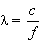 Рис. 4. Длина волныСкорость распространения ультразвука (velocity) — это скорость, с которой волна перемещается в среде. Скорость в заданном материале константна (при заданной температуре), но изменяется от материала к материалу:
| Материал | Скорость (m/s) |
| Воздух | 330 |
| Вода | 1497 |
| Жировые ткани | 1440 |
| Мягкие ткани | 1540 |
| Кровь | 1570 |
| Мышечные ткани | 1500 - 1630 |
| Кость | 2700 - 4100 |
| Метал | 3000 - 6000 |
Скорость равна длине волны, умноженной на количество колебаний в секунду:
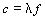Усредненная скорость распространения ультразвука в тканях тела человека составляет 1540 м/с — на эту скорость запрограммировано большинство ультразвуковых диагностических приборов.
Амплитуда (Amplitude) ультразвуковой волны — это максимальное отклонение наблюдаемой физической переменной от среднего значения (рис. 5).
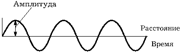 Рис. 5. Амплитуда ультразвуковой волныДля получения ультразвука используются специальные преобразователи — трансдьюсеры (transducers), которые превращают электрическую энергию в энергию ультразвука. Получение ультразвука базируется на обратном пьезоэлектрическом эффекте. Суть эффекта состоит в том, что если к определенным материалам (пьезоэлектрикам) приложить электрическое напряжение, то произойдет изменение их формы (рис. 6).
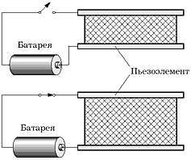 Рис. 5. Обратный пьезоэлектрический эффектС этой целью в ультразвуковых приборах чаще всего применяются искусственные пьезоэлектрики, такие, как цирконат или титанат свинца. При отсутствии электрического тока пьезоэлемент возвращается к исходной форме, а при изменении полярности вновь произойдет изменение формы, но уже в обратном направлении. Если к пьезоэлементу приложить быстропеременный ток, то элемент начнет с высокой частотой сжиматься и расширяться (т.е. колебаться), генерируя ультразвуковое поле.
Возвращающиеся сигналы вызывают колебания пьезоэлемента и появление на его гранях переменного электрического тока. В этом случае пьезоэлемент функционирует как ультразвуковой датчик. Обычно в ультразвуковых приборах для излучения и приема ультразвука используются одни и те же элементы. Поэтому термины "преобразователь", "трансдьюсер", "датчик" являются синонимами.
Данные УЗИ можно рассматривать на разных уровнях сложности, как показано ниже:
|
|
|
| В основном, отраженный ультразвуковой импульс имеет форму сигнала. Тем не менее, хранения полной волны, называемой RF-data, является затратным с точки зрения объемов, так как каждая точка на кривой должны быть представлены в той или иной форме. Однако, если есть RF-data, то амплитуда и частота могут быть рассчитаны в процессе постобработки сигнала. | Отраженный ультразвуковой импульс обладает частотой (или спектром частот), которая может быть представлена числом на каждый пиксель изображения, как описано в Допплерографии. В таком случае объем данных меньше чем при хранении RF-data. |

|

|
| Пульс имеет определенную амплитуду. Хранение только амплитуды менее затратно чем RF-data. Это единственные данные, которые используются для построения серого изображения, где амплитуда изображена как яркость точки рассеивания сигнала, как в B-mode и M-mode. | |
В основном, получение изображения с помошью ультразвука выполняется путем излучения импульсов, которые частично отражаются от границы между двумя тканевыми структурами, и частично возвращаются (рис. 2). Сила отражения зависит от разницы в сопротивлении (impedance) между двумя тканями. Базовые изображения, полученные с помощью ультразвука, основаны только на использовании амплитуды (amplitude) отраженного сигнала. Не смотря на то, что излучение сигнала происходит один раз, отраженный сигнал, тем не менее, отражается и возвращается более или менее непрерывно (на самом деле несколько раз). Так как скорость звука в ткани является довольно постоянной величиной, то время между излучением импульса и приемом отраженного сигнала зависит от расстояния; то есть, глубины отражающей структуры. Таким образом, отраженные импульсы разделены на несколько интервалов по времени (многодиапазонное стробирование - multiple range gating - метод выделения некоторого интервала на временной оси, шкале частот и т.п. для увеличения вероятности обнаружения полезных сигналов на фоне помех), что соответствует нескольким уровням глубины, и отображается на изображении как глубина (depth).
Различные структуры отражают разное количество излучаемой энергии, и, таким образом, отраженный сигнал в зависимости от глубины будет иметь разные амплитуды, как показано ниже. Время между двями импульсами зависит от требования к максимальной глубине проникновения сигнала.
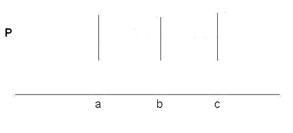
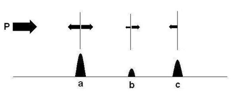
Рис. 2. Схематическое представление отражения ультразвукового импульса, излучаемого из зонда (probe) P, и отраженного в точках a, b и c. Часть энергии импульса отражается от рассеивателя в точке a, остальное передается; часть возвращается из точки b и остальное из точки c. Когда сигнал возвращается в зонд P, отраженный импульс дает информацию о двух измерениях: амплитуда отраженного сигнала, и время, необходимое для возвращения, которое зависит от расстояния до зонда. Количество энергии, отраженное в каждой точке, представлено на схеме как амплитуда. Когда измерения получены, объект-рассеиватель отображается в виде амплитуды и его положеия в пространстве. Таким образом, входящий импульс их точки a - это полная амплитуда сигнала, выпущенного зондом P. В b, входящий испульс - это импульс, который прошел сквозь объект a, и так далее.
Задержка во времени, τ, между излечением и приемом сигнала - это время, которое необходимо для путешествия звука до объекта-рассеивателя и обратно, то есть, для преодоления двойного расстояния, r, до объекта со скоростью звука, с, в данной ткани. Поэтому:
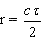
После того, как сигнал был послан с помощью зонда, система переходит в режим ожидания отраженного импульса. Расчет глубины объекта-отражателя основано на времени между излучением и приемом сигнала. Общее время ожидания отраженного сигнала зависит от желаемой глубины сканирования.
Полученнуя энергию в определенный момент времени, то есть с определенной глубины, можно отобразить в виде амплитуды энергии - A-режиме (A-mode). Амплитуда также может быть отображена в виде яркости точки, находящейся на определенном расстоянии от зонда, как график B-режима (B-mode). И если некоторые из объектов-отражателей движутся, кривую движения можно проследить, проецируя B-режим в виде развертки на экран или бумагуи, как показано на рис. 3. Это называется М-режим (M-mode, Motion).
| 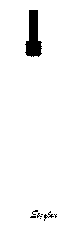 | 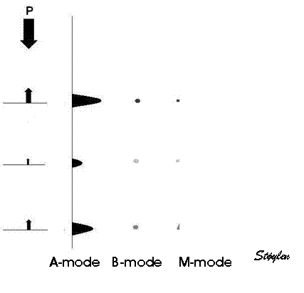 |
| Рис. 3a. Ультразвуковое изображение строится как линия отраженного эха на основе временной задержки и амплитуды отраженных сигналов. | Рис 3b. Отраженные сигналы могут отображаться в трех различных режимах. A-Режим (Амплитуда) показывает глубину и количество отраженной энергии от каждого объекта-рассеивателя. В-режиме (Яркость) показывает энергию сигнала или амплитуду как яркость (в данном случае, чем выше энергия, тем точка изображения темнее) точки. Объект-рассеиватель движется. Если глубину представить в виде функции от времени, то в М-режиме.график движения рассматривается как кривая, (для неподвижных объектов - горизонтальная линия). |
Если разница между скоростями звука в прилегающих материал слишком велика, то степень отражения будет близка к полному отражению, и передача энергии сигнала в более глабокии слои не произойдет. Например, такой эффект наблюдается на границе между мягкими тканями и костью, тканями и воздухом. Это означает, что структуры, расположенные более глубоко, могут оказаться "в тени".
Стурктуры отражают ультразвук не только в обратном направлении к зонду-излучателю, но и рассеивают ультразвуковой сигнал в нескольких направлениях. Поэтому, такие структуры обычно именуются как объекты-рассеиватели (scatterers). Важно понимать, что фактическое количество энергии, отраженное от зонда (например амплитуда отраженного сигнала), зависит не тольео от коффициента отражения. Направление отраженного сигнала также имеет значение.
Поэтому:
| 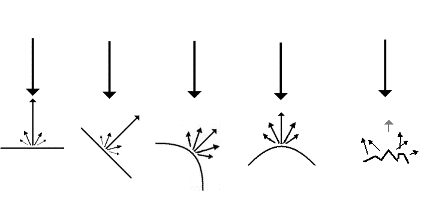 | |
| Эффект размера и направления отражающей поверхности. Два изображени слева показывают идеальную отражающую поверхность. Большая часть энергии отразится назад к трансдьюсеру, что приведет к появлению эха с большой амплитудой если поверхность перпендикулярна к ультразвуковому лучу. С другой стороны, если поверхность под наклоном в 45º, почти вся энергия отразится в другую сторону, что приведет к очень слобому эху в сторону зонда. Следующие два изображения показывают рассеиватели с более изогнутыми поверхностями, что приводит к рассеиванию большего количества энергии в разных направлениях. Впоследствии обратно к зонду вернется сигнал с более низкой ампитудой. Но если поверхность именит положения вернетс сигнал с большей энергией, как например во время бияни сердца, когда стенки сердца меняют направление\положение. Наконец, последнее изображение представляет собой сильно неоднородную поверхность, которая отражает сигнал во всех возможных направлениях с очень маленькой нитью эха в сторону зонда. | |

|
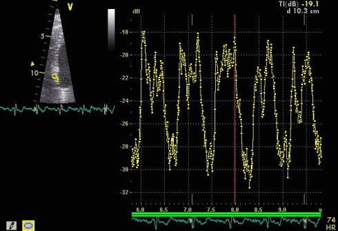 |
| Эффект направления отражающей поверхности на изображении левого желудочка по длинной оси. Результирующее эхо от перегородки (стрелки) намного сильнее в областях где поверхность перпендикулярна к ультразвуковому лучу (синие стрелки) по сравнению с областью где поверхность под углом к лучу. | Cyclic variations in the amplitude in reflected ultrasound (integrated backscatter) with heart cycle. This reflect the variations in reflexivity, but not myocardial density, as the myocardium is incompressible. Thus, most of the amplitude variations must be due to changes in fibre directions. |
Термин: отражение применяется к возвращаемому сигналу, в то врем как рассеивание означает дисперсию отраженного сигнала, но, как показано на изображении сверху, это один и тот же процесс
Поэтому, видимая плотность ткани на ультразвуковом изображении также зависит от наклона ткани относительно луча.
A part of the heart where the fibres run mainly in a direction across the ultrasound beams, will look much denser. Variations in amplitude (brightness of the reflected signal) do not necessarily mean differences in density, but may also mean variations in reflectivity due to variation in the direction of the reflections. Thus, integrated backscatter can be used for studying of cyclicity, but it is not useful for tissue characterisation.
Some of the energy of the ultrasound is absorbed by the tissues, and converted to heat. This indicates that it may have biological effects, if the absorbed energy is high enough.
Absorption is important for two reasons:
The absorption is dependent on many factors [117]:
The ultrasound power is the amplitude of the transmitted signal, at the probe. I.e. The total energy that is transmitted into the patient. This is measured in deciBels.
The mechanical index, is the amount of energy that is absorbed by the patient. This, howver is not inly dependent on the power, but also on the focussing of the beam, and is highest where the beam is focussed, but it also decreases with depth. Thus, the mechanical index is a measure of the possible biological effects of the ultrtasound, and is usually calculated and given as a maximal theoretical entity, by the equipment. Usually, it may vary between 1.5 (in B-mode) and 0.1 (in contrast applications).
It follows that the ultrasound waves are attenuated as some of the energy is reflected or scattered. Thus, in passing through tissue, the energy is attenuated due to the reflection that is necessary to build an image.
Attenuation will have effect on the image in other ways, as shown blow.
| 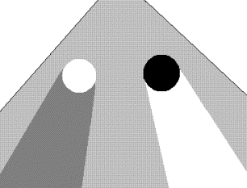 |

|
| Attenuation. Imaging of a homogeneous tissue, f.i. liver will change the apparent density behind structures with different attenuation. Behind a structure with high reflexivity (e.g. a calcification), there will be high attenuation, (white; left). Hence, the sector behind receives less energy, and appears less dense (darker), the area behind may even be a full shadow. Behind a strcture with low reflexivity (e.g. a fluid) there is little attenuation (black; right), the tissue receives more energy and appears denser (brighter - "colouring") than the surrounding tissue. | Liver with a gallbladder in front, containing gallstones. The gallstones are dense, with a shadow behind. The rest of the gallbladdeer is fluid filled, thus the sector behind the fluid appears denser than the neighbouring tissue due to "colouring". |
This is about 10% of the total energy loss. In addition, the ultrasound waves are diffracted, resulting in further diffusion of the waves out into the surrounding tissue and loss in the energy available for reflection (imaging). However, the most important factor is the the ultrasound energy is attenuated due to absorption in the tissue, this absorption process generates heating of the tissue. It follows that as attenuation is energy loss, this means that the attenuation increases with increasing depth. ( And the reflections are further attenuated in passing back toward the probe).
The attenuation is the limiting factor for the depth penetration of the beam, i.e. the depth to which the beam can be transmitted, and still give useful signals back. Basically, the shorter the wavelength, the higher the attenuation (and thus the shorter the depth penetration). The effective range can be said to be about 200 - 300 x λ. For practical medical purposes, the penetration for good imaging is about 10 - 20 cm at 3.5 MHz (adult cardiac), 5 - 10 cm at about 5 MHZ (pediatric cardiac), 2-5 cm at 7.5 MHz, 1-4 cm at 10 MHZ, the last two frequencies being in the vascular domain. However, one method to bypass some of the attenuation problem is by harmonic imaging. Thus the beam is transmitted at a certain frequency, and the received signal is analysed at twice that frequency (Fourier analysis). This increases the signal to noise ratio of the reflected signal, especially at the deepest parts of the image, without a similar loss of resolution.
Attenuation can be dealt with by gain, increasing gain amplifies the reflected signal in post processing. However, increased gain increases signal and noise in the same manner.
Gain can be done at acquisition, or in post processing.

|

|
| Uncompensated image, showing decreasing signal intensity (and, hence, visibility) with depth, due to attenuation. | Increasing over all gain, will increase the amplitude of the signal, and the structures at the bottom of the sector becomes more visible. But the gain in the top of the sector are also increased, including the cavity noise, thus decreasing contast in this part of the image. |
All commercial equipment today has a time gain compensation (TGC). This increases the gain of the reflected signals with increasing time from the transmitted pulse; equivalent to increasing the gain with increasing depth. However, this is not a perfect solution, as the signal-to-noise ratio may decrease, if the noise does not decrease similarly with depth. However, it will give a better balance in the picture, and compensate for much of the attenuation effects. This is a pre processing function, and has to be set at acquisition.
| TGC controls.
Basically, each slider controls gain selectively at a certain depth: |
In older models, the
TGC should be set manually to achieve a balanced image: |
| 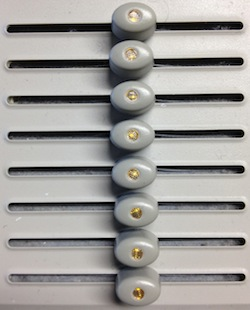 |

|
|
|

|
| Present models, however, have automatic TGC. Thus the default control setting should be neutral to achieve a balanced picture: | Using manual setting by old habit will result in a double compensation, with too much gain in the bottom, too little in the top: |
|
|
|
|
|

|
Low amplitude signals can be filtered away, resulting in filtering out cavity noise, however at the price of risking to loose low amplitude signals (e.g. from valves.) by the reject function. Finally, the grey scale can be compressed, resulting in a steeper saturation curve. This means that the picture goes to full saturation (pure white) at a lower amplitude, while the brightness of low amplitude signals are reduced.
It is important to realise that all these are post-processing functions that manipulates the image on the screen, without improving the signal quality itself, or the fundamental signal to noise ratio.
| 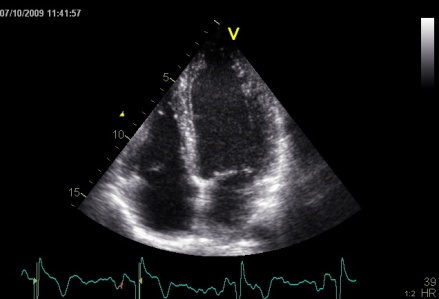 |

|
| Image with default gain, reject and compress settings | Principle of gain, reject and compress. All curves display brightness of the display in relation to the amplitude of the rejected signal. An ordinary gain curve is shown in black, using a linear brightness scale, displays the full range of amplitudes. Increasing gain (red curve), will increase all signals, including the weakest, as in the noise. The disadvantage, in addition to increasing noise, is that the strongest signals will be saturated, so details may disappear. Compress is shown as the blue curve. This results in a steeper brightness curve, resulting in less brightness of the weakest echoes, and more brightness of the strongest. Thus, weak echoes may disappear together with background noise, while strong echoes will be saturated, resulting in loss of detail. Finally reject is shown by the light grey zone, siply displaying all signals below a certain amplitude as black. (The black brightnes curve drops abruptly to zero at the reject limit (dark grey line). A combination of high gain and reject will give an effect fairly similar to the compress function. |
| 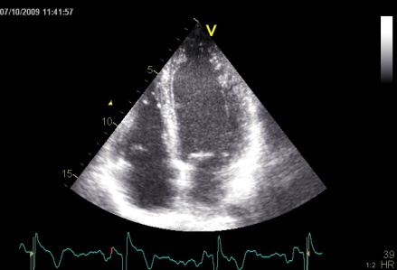 | 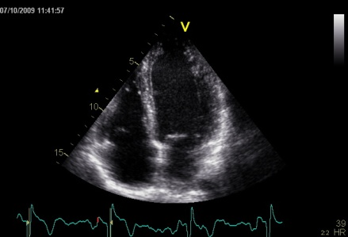 |
| 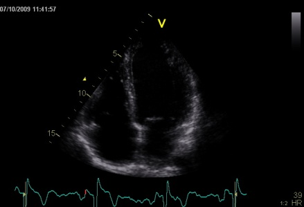 | 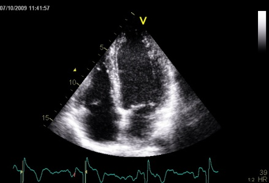 |
| Same image with high gain (top) showing increased density of the endocardium, but loss of detail due to brightness saturation and a corresponding increase in cavity noise and low gain (bottom), showing reduction in cavity noise, but loss of detail (see endocardium in lateral wall). | Same image with increased reject (top) showing reduction in cavity noise, but also with slight loss of detail (endocardium in lateral wall) and compress function (bottom) with less detail in the myocardium due to increased brightness. |
All commercial equipment today has a time gain compensation (TGC), increasing the gain of the reflected signals with increasing time from the transmitted pulse. This is equivalent to increasing the gain with increasing depth. However, this is not a perfect solution, as the noise is constant with depth, while the reflected signals become weaker, and with TGC, the noise will be gained as well as the signal, and the signal-to-noise ratio will decrease, thus the resulting signal will end up as a grey blur at a certain depth. This effect can be seen below. Before harmonic imaging, the TGC was adjustable, relying on the operator to optimise the visibility. AS the greater part of cavity noise is removed by the harmonic imaging, most modern equipment has automated TGC, but retains the possibility of manual adjustment.
| 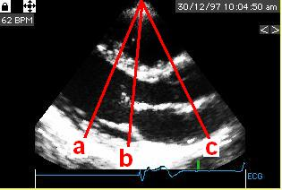 |
||
| a 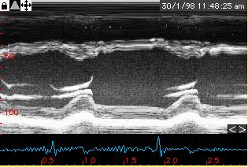 |
b 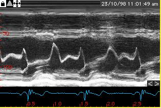 |
c 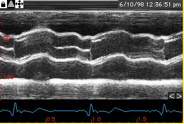 |

 |
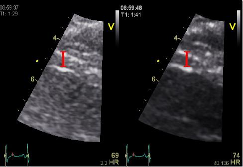 |
| Second harmonic (1.7/3.5 MHz) left and fundmental (3.5 MHz) right images of LV
septum, showing how the echo from the blood/septum interface (arrows)
is thicker in harmonic imaging, due to the reduction in frequency.
Observe, however, how cavity noise is much reduced in harmonic imaging,
resulting in a far more favorable signal-to-noise ratio. |
The thickness of the surtface echoes is
dependent n the pulse length, and thus also on the frequency.
This picture of the septum illustrates how the leading-to-leading ASE
convention shown in red, eliminates the pulse length in measurement (as
the echo blooms in both directions), while the Penn convention will
result in increasing overestimation of the thickness by increasing
pulse length as it incorporates the interface on both sides. |
| 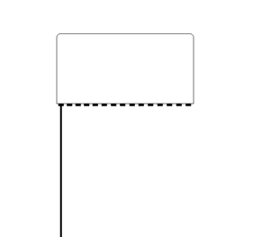 | 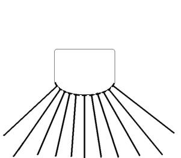 |
||
| A pulse is sent out, ultrasound is reflected, and the B-mode line is built up from the reflected signals. | Linear array. |
Curvilinear array |
 |
 |
| By
making the ultrasound beam sweep over a sector, the image can be made
to build up an image, consisting of multiple B-mode lines. |
c. In principle, the image is built up line by line, by emitting the pulse, waiting for the reflected echoes before tilting the beam and emitting the next pulse. Resulting in an image being built up with a whole frame taking the time for emitting the total number of pulses corresponding to the total number of lines in the image. |
 |
 |
|
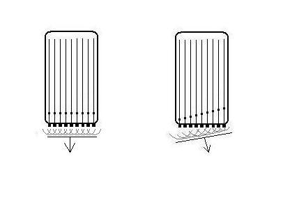 |
||
| Fig. 7A. Mechanical transducer. The
sector is formed by rotating a single transducer or array of
transducers mechanically, firing one pulse in each direction and
then waiting for the return pulse before rotating the transducer
one step. In this beam there is electronic focusing as well, by an
annular array. |
B. Electronic transducer in a phased
array. By stimulating the transducers in a rapid sequence , the
ultrasound will be sent out in an interference pattern. According to
Huygens principle, the wavefront will behave as a single beam, thus the
beam is formed by all transducers in the array, and the direction is
determined by the time sequence of the pulses sent to the array. Thus,
the beam can be electronically steeredand will then sweep stepwise over
the sector in the same way as the mechanical transducer in A, sending a
beam in one direction at a time. |
|
| 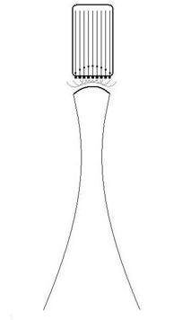 |  |
| Dynamic focusing. The
same principle of phase steering can be applied to make a concave
wavefront, resulting in focusing of the beam with its narrowest
part a distance from the probe. Combining the steering in B
and C will result in a focussed beam that sweeps across the sector, as
in the moving image above. |
Resulting Ultrasound beam as shown by a computer simulation, focusing due to the concave wavefront created by the dynamic focusing. The wavelength is exaggerated for illustration purposes. Image Courtesy of Hans Torp. |
 Annular focusing in all directions
both in plane and transverse to the plane.
|
 Linear focusing in the imaging plane
only.
|
| 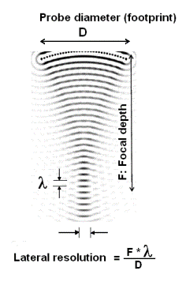 | 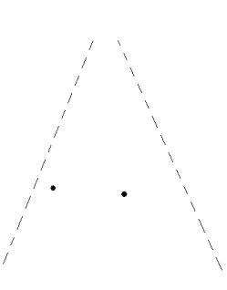 |  |
| The lateral resolution of
a beam is dependent on the focal depth, the wavelength and probe
diameter (aperture) of the ultrasound probe. (Reproduced from Hans Torp by permission) |
Two points in a sector that is to be scanned. | The ultrasound scan will smear the points out according to the lateral resolution in each beam. |
| 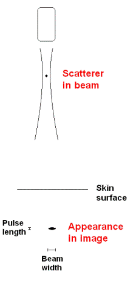 |
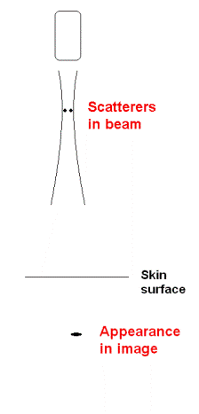 |
 |
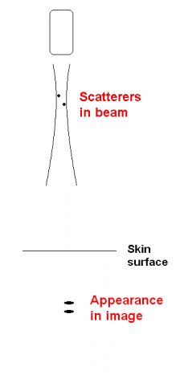 |
| Thus a small scatterer will appear to be
"smeared out", and the apparent size in the image is determined by the
beam width and pulse length. As the pulse length is less than the beam
width, the object will be "smeared out" most in the lateral direction. |
Two scatterers at the same depth, separated
laterally by less than the beam width, will appear as one. |
Two
scatterers at different depths will appear separate if separated
by more than the pulse length. |
But, if separated both laterally and in
depth, they will appear as being in the same line, if lateral
separation is within the beam. |
| 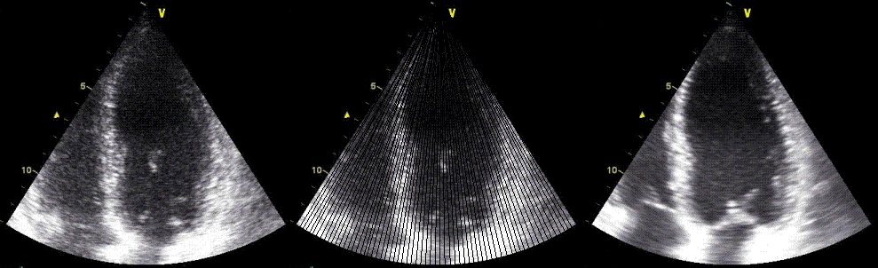 |
| Two
different lateral resolutions, the speckles can be seen to be
"smeared". In this case the loss of resolution in the right image is
due to lower line density . By rights the image should appear as split
in different lines as indicated in the middle, as each beam is
separated, line density being less than optimal relative to the beam
width. Instead the image is interpolated beween lines. This reduction
in line density is done to achieve a higher frame rate, as illustrated below. |
|
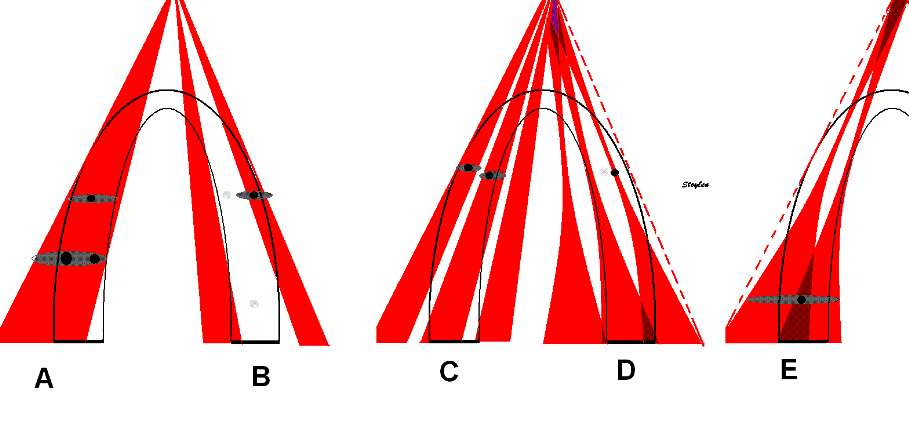
|
||||
| A: Beam width. Speckles (true speckles: black) are
smeared out across the whole beam width ( Apparent speckles dark grey,
top). This means that with this beam width the speckles from to
different layers cannot be differentiated, and layer specific motion
cannot be tracked. |
B: Line density. Only the lines in the
ultrasound beams (black) are detected, and can be tracked, beams
between lines are not detected or tracked. The spaces between lines
cannot be seen in the final image due to image lateral
smoothing. |
C:
Divergence of lines in the depth due to the sector image will both
increase beam width and decrease line density in the far field. this
may result in the line density and width being adequate (in this
example for two layer tracking) in the near field, but inadequate in
the far field, situation there being analoguous to A. |
D:
Focussing. The beams being focussed at a
certain depth mau mean that line density may be inadequate at the focus
depth. Thus speckles in some layers may be missed. IN general, the
default setting will usually give the best line density at the focus
depth, so unless frame rate is increased, this problem may be minor.
Howewever, line density will decrease ifalso if sector width is
increased, there is a given number of lines for a given frame rate and
depth. In any case, in the far field, the beams will be broader, and
the beam width will be more like A and C. |
E:
Focussing may even result in beams overlapping int the far field. A
speckle in the overlap zone may be smeared out across two
beams. |
| As the depth of the sector
determines the time before next pulse can be sent out, higher depth
results in longer time for building each line, and thus longer time for
building the sector from a given number of lines, i.e. lower frame rate. |
Thus reducing the desired depth of
the sector results in shorter time between pulses, and thus shorter
time for building each line, shorter time for building the same number
of lines, i.e. higher frame rate. In this case, the depth has been
halved, and the time for building a line is also halved. |
 |
 |
| In
this case, in the image to the left, the depth has been halved,
reducing the time for building each line to half, thus also halving the
time for building the full sector, doubling the frame rate. |
|

|
 |
| b. Reducing sector
width, but maintaining the line density, gives
unchanged lateral resolution but higher frame rate,
at the cost of field of view. |
c. Reducing the line density instead and maintaining sector width, results in lower number of lines, i.e. lateral resolution, and gives the same increase in frame rate. |
|
 |
3D ultrasound increases complexity a lot, resulting in a new set
of additional challenges.
The number of crystals need to be increased, typically from between
64 and 128 to between 2000 and 3000. However, the probe footprint still
needs to be no bigger than being able to fit between the ribs. And the aperture size must still be adequate for image
resolution.
The number of data channels increases also by the square, from 64 to
642 = 4096. This means that the transmission capacity of the
probe connector needs to be substatially increased, and some processing
has to take place in the probe itself to reduce number of transmission
channels. .
The number of lines also increase by the square of the number for
2D, given the same line density, meaning that each plane shall
have the same number of lines, and a full volume then shall be n=built
by the same number of planes. This means that given 64 lines per plane,
the number of planes should be 64, which means a total of 64 x 64 =
4096 lines. This means that the frame rate (usually termed the "volume
rate" in 3D imaging), will be 0.19 ms x 4096 = 778 ms, or about 0.8
secs. Meaning about 1 volume per heartbeat for a heart rate of 75. This
is illustrated below.
| 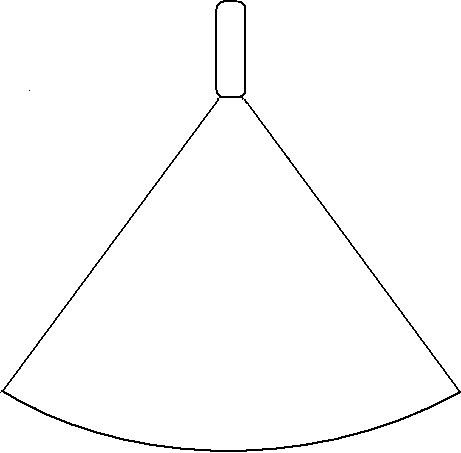 |
 |
| Building a 2D sector with lines. (Even
though each line (and the sector) has a definite thickness, this
is usually not considered in 2D imaging, except in beamforming for
image quality. |
Building a 3D volume. Each plane has
the same number of lines as in the 2D sector to the left, and takes as
long to build. The number of planes equals the number of lines in each
plane. Here is shown only the building of the first plane (compare with
left), but the time spent on each of the following planes are in
proportoion. The time for a full volume is then equal to the square of
the number of lines in each plane. |
| 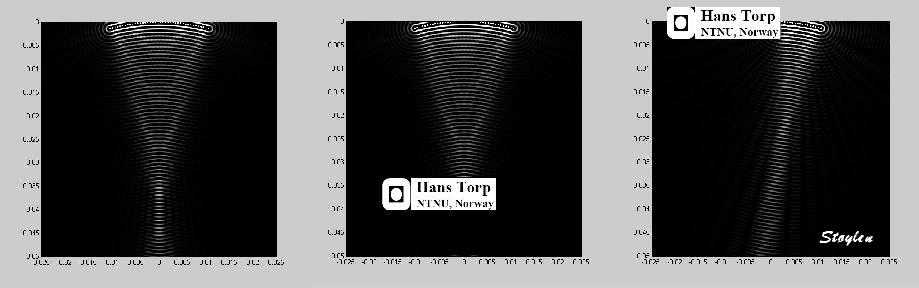 | |
| Illustration of effects of shadows on an
ultrasound beam. Left: no shadow. Middle, a shadow distant from the
beam (e.g. a calcification or the lung seen at a distance), resulting
in a shadow with no image below it. Left a shadow close to the
transducer surface (e.g. lung edge or rib) will result in a narrow beam
(reduced apparent aperture) which will not be seen as a shadow in the
picture, but rather a reduced lateral resolution. (Original
simulation
image to the left courtesy of Hans Torp, modifications by me.) The
effect of the depth of the origin of
the shadows in the images is shown below, indicated by the green
arrows. |
|
| 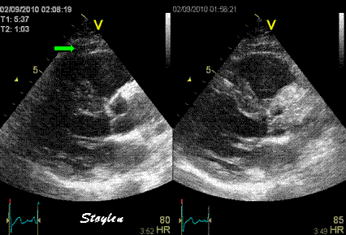 |  |
| Left, shadow originating at a depth of ca 3 cm, as can seen by the visible structures of the chest wall closer to the probe. The shadow is probably due to the edge of the lung. Right; a small repositioning of the probe solves the problem. | Left shadow originating close to the chest wall (< 1 cm), probably the edge of a costa. It can be seen as a shadow, but the main effect is loss of lateral resolution in the shadow, and again a small repositioning of the probe solves the problem as seen to the right. |
| 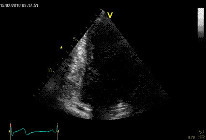 |  |
| more pronounced drop out of the anterior wall in this 2-chamber view due to a lung shadow distant from the probe. However, the lateral resolution may be seen to be reduced at the basal part of the border between the picture and the shadow. | Reduced lateral resolution due to costal shadow. The effects of both costae and shadows will vary, according to the distance from the probe. In this case the patient was extremely thin, thus there was virtually no distance between the probe and the costa. In this case, no localised shadow can be seen, the costa was to the left in the image, where resolution is poorest. |
| 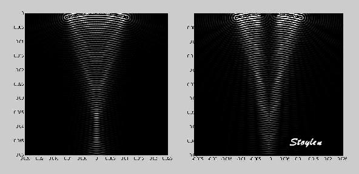 | 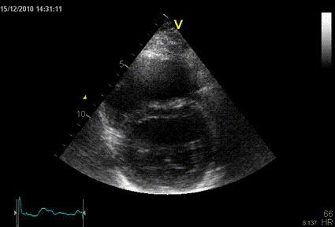 |
| If the near shadow is in the centre of the probe, the result may be that the beam is split in two, resulting in two apparent apertures. The effect on the image is shown below. | Split image due to two virtual appertures, caused by a near shadow in the middle of the probe footprint. |

| 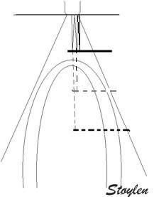 |
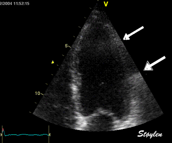 |
| 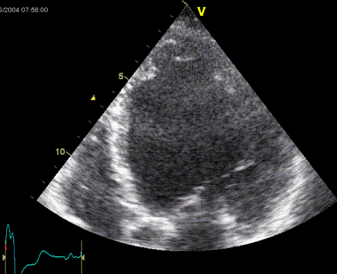 |
| By first glance, this image seems to have OK image quality. The endocardium seems well defined around most of the wall. However, the lateral wall shows good definition mostly in the latter half of the cycle. And shadowy reverberations can be seen in both base and midwall. |
 |
 |
| Simulated beam with focusing, showing
interference pattern dispersing some of the beam to the sides. (image
courtesy of Hans Torp). |
Side lobes from a single focussed ultrasound beam. These side lobes will also generate echoes from a scatterer hit by the ultrasound energy in the side lobes, i.e. outside the main beam. |


| 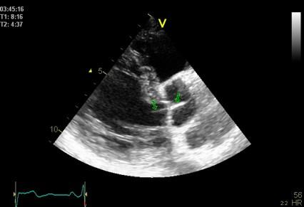 |
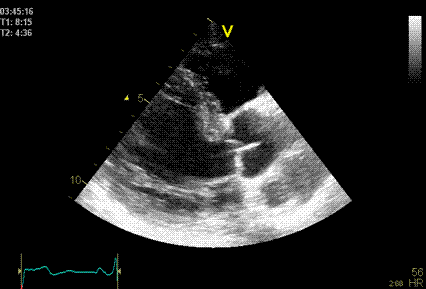 |
| Side lobes originating from the fusion line
of the aortic cusps, seen to extend into both the LV cavity and the
aortic root cavity (arrows). |
As opposed to reverberations,
the side lobes moves with the structure, and may change with time (in
this case the echo intensity of the fusion line decreases as the valve
opens, and thus the intensity of the side lobes too) . |

| Apical position of the probe. The two
orthogonal planes can be seen to bisect the apex. |
Foreshortening by erroneous placement of
the probe. The two orthogonal planes can be seen to bisect the wall,
not the apex. In one plane this will not be evident, as the intersecting wall still shows an ellipsoid shape. |

 |
 |
| Fourier analysis of the resulting signal in native frequency (left) and second harmonic mode (left) shows that the native signal contains much more energy at all depth, while the harmonic signal contains most of the energy at a certain depth, in this case at the level of the septum, showing a much better signal-to-noise ratio.(image courtesy of Hans Torp). | Energy distribution of the signal from cavity (lower curve) and septum (upper curve), showing the same phenomenon as the middle picture. The difference between cavity signal (being mostly clutter) and tissue is small in the native frequency domain (1.7 MHz), but there is little clutter at the harmonic frequency (3.4 MHz). Thus, filtering the native signal will reduce clutter, as shown below. (image courtesy of Hans Torp). |
| The same image in harmonic (left) and fundamental (right) mode, showing the improved
signal-to-noise ratio in harmonic imaging, especially in rducing noise
from the cavity. (Thanks to Eirik Nestaas for correcting my
left-right confusion in this image text) |
Stationary reverberation in harmonic (left)
and fundamental (right) imaging, showing the effect of harmonic imaging
on clutter.
|
 |
|
| Interference pattern.
Here is simulated two wave sources or scatterers at the far field
(white points). The emitted or reflected waves are seen to generate a
speckle pattern (oval dots) as the amplitude is increased where wave
crests cross each other, while the waves are neutralised where a wave
crest crosses a though. This can be seen by throwing two stones
simultaneously in still water . The speckle pattern can be seen in
front of the scatterers, towards the probe. |
Irregular interference
pattern. This is generated by more scatterers somewhat randomly
distributed. The speckle pattern is thus random too. Again there
may be a considerable distance between the speckles and the scatterers
generating the pattern. |

| An M-mode along the septum demonstrates how the speckles is shown as motion curves. It is evident that many speckles are only visible during part of the heart cycle, but if the speckle pattern is compared from frame to frame, the changes will be small. The grainy texture of the lines is due to the limited frame rate as the M-mode on the right is reconstructed from the 2D image at the left. When the speckle pattern is followed by an M-mode in the wall, the alternating bright and dark points are seen as alternating bright and dark lines. The lines remaining to a large degree unbroken, shows the pattern to be relatively stable, the speckles moving along with the true myocardial motion, and thus myocardial motion can be tracked by the speckles. | |
 |
 |
|
| Speckle tracking. Real
time M-mode demonstrates how the speckle pattern follows the myocardial
motion. (Remark how this image is not grainy, due to the high frame
rate of real time M-mode). |
Defining a kernel in the
myocardium will define a speckle pattern within (red). Within a defined
search area ( blue), the new position of the kernel in the next frame
(green) can be recognised by finding the same speckle pattern in a new
position. The movement of the kernel (thick blue arrow) can then
be measured. |
Speckle tracking search
algorithm. The kernel is defined in the original frame at t=0 (red
square). In the next frame, at t=t, the algorithm defines a search area
(white square), and the search is conducted in all directions for the
matching kernel. |
 |
|
| LOngitudinal speckle tracking in apical 4 chamber view. The resulting tracking of the kernels shown in motion. As can be seen, with a drop out apicolateral, this ROI tracks less than perfect, giving too low strain both in LA and MA segments. | Speckle tracking can be applied crosswise. In this parasternal long axis view, the myocardial motion is tracked both in axial and transverse (longitudinal) direction. It is evident that the tracking is far poorer in the inferior wall, due to the poor lateral resolution at greater depth. |

The Doppler effect |
||
| Christian Andreas Doppler (1803 - 1853) |
My cat Doppler (2004 - |
The Doppler effect was discovered by Christian Andreas Doppler (1803
- 1853), and shows how the frequency of an emitted wave changes
with the velocity of the emitter or observer. The theory was presented
in the royal Bohemian society of Science in 25th of May1842 (5
listeners at the occasion!), and published in 1843 (119). The premises for his
theoretical work was faulty, as he built his theory on the work of
James Bradley who erroneously attributed the apparent motion of stars
against the background (parallax effect) to the velocity of the earth
in its orbit (instead of the effect of Earth's position in orbit on the
angle of observation). Further, Doppler attributed the differences in
colour of different stars to be due to the Doppler effect, assuming all
stars to be white. Finally, he theoretised over the effect of the
motion of double stars that rotate around each other, assuming
a Doppler effect from the motion. The changes in
wavelength from the Doppler effect, however, is too small to be
observed.
However, Doppler did a theoretical derivation of the effect of the motion of the source or observer on the perceived wavelength from the premises of a constant propagation velocity of the waves in the medium, and this is entirely correct, valid both for sound waves and electromagnetic radiation of all kinds. The basis for the Doppler effect is that the propagation velocity of the waves in a medium is constant, so the waves propagates with the same velocity in all directions, and thus there is no addition of the velocity of the waves and the velocity of the source. Thus, as the source moves in the direction of the propagation of the waves, this does not increase the propagation velocity of the waves, but instead increases the frequency.The original derivation of the Doppler principle as well as the extension to reflected waves is explained in more detail here. As a work of theoretical physics, it is thus extremely important. In addition, it has become of practical importance, as the basis for the astronomical measurement of the velocity of galaxies by the red shift of the spectral lines, in Doppler radar, Doppler laser and Doppler ultrasound.
The theory was experimentally validated by the Dutchman Christoph
Hendrik Diderik Buys Ballot (120),
with the Doppler effect on sound waves, who placed musicians along a
railway line and on a flatbed truck, all blowing the same note, and
observed by subjects with absolute pitch, who observed the tones being
a half note higher when the train was approaching as compared to the
stationary musicians, and a half note lower as the train receded.
(This can be observed in everyday phenomena such as the sound of f.i. an ambulance siren, the pitch (frequency) is higher when the ambulance is coming towards the observer, hanging as it passes, and lower as it goes away.
This is illustrated below:
The Doppler
effect. As the velocity of sound in air (or any other medium ) is
constant, the sound wave will propagate outwards in all directions with
the same velocity, with the center at the point where it was emitted.
As the engine moves, the next sound wave is emitted from a point
further forward, i.e. with the center a little further forward. Thus
the distance between the wave crests is decreased in the direction of
the motion, and increased in the opposite direction. As the distance
between the wave crests is equal to the wavelength, wavelength
decreases (i.e. sound frequency increases) in front of the engine, and
increases (sound frequency decreases) behind it. This effect can be
heard, as the pitch of the train whistle is higher coming towards
a listener than moving away, changing as it passes. The effect on the
pitch of the train whistle was published directly, but later than
Doppler and Buys Ballot.

The Nykvist phenomenon (121) is an effect of the relation
between the sampling frequency and the observed velocity. If you sample
at a certain frequency, the direction of the motion becomes ambiguous,
more frequent sampling will give the correct direction, less
frequent sampling results in an apparent motion in the opposite
direction. This can be observed with a stroboscopic light, for instance
illuminating the flow of water, or with old fashioned wagon wheels in
old moves which often seem to revolve slowly backwards when the wagon
moves forwards.
This is illustrated below.
Constant rotation velocity, decreasing sampling frequency:The easiest is to show how
reducing the sampling frequency affects the apparent motion. All
circles rotate with the same rotation velocity clockwise. The sampling
frequency is reduced from left to right. It can be seen that the red
dots is at the same positions when they are seen to move.
|
|||
| a: 8:1
8 samples per rotation, the red point is seen in eight positions during the rotation. |
b: 4:1 4 samples per rotation, the red point is seen to rotate just as fast, but is only seen in four positions |
c:
2:1 2 samples per rotation, i.e. the sampling frequency is exactly half the rotation frequency. Here, the red dot is only seen in two positions, (but it is evident that it is in the same positions at the same time as in a and b). However, it is impossible to decide which way it is rotating. This is the Nykvist limit; sampling rate = 1/2 rotation rate. |
d: 1.5:1 1.5 samples per rotation,or one sample per three quarter rotation, making it seem that the red dot is rotating counter clockwise. Again, the dot is in the same position at the same time as in a and b. |
|
|
|||
| a: 1:8 One rotation per 8 samples. The sampling catches the red dot in 8 positions during one rotation. |
b: 1:4 Rotation velocity twice that i a; one rotation per four samples, the sampling catches the red dot only in four positions during one rotation. |
c: 1:2 Rotation velocity four times a; one rotation per two samples, this catches the red dot in only two positions, giving directional ambiguity as above. |
d: 1:1,5 Rotation velocity six times a; one rotation per 1,5 samples, or 3/4 rotation per sample, giving an apparent counter clockwise rotation. |
Sampling from increasing depth will increase
the time for the pulse returning, thus increasing the sampling interval
and decrease the sampling frequency. The Nykvist limit thus
decreases with depth. This means that pulsed Doppler has depth
resolution, but this leads to a limit to the velocities that can be
measured.
The Nyquist limit is dependent on the depth (D) of the sampling volume. The larger distance from the probe, the longer time for the pulse to pass to the desired depth and back, and the lower the Nyquist limit. The time for the return of the pulse is:
T = 2D/c and the
maximum PRF as PRF = c/2D
Aliasing is no
problem in pulsed tissue Doppler, as
tissue velocities are far below the
Nykvist limit. However, in colour tissue Doppler, harmonic imaging is
halving the effective frequency, and leads to aliasing as shown below.
on the other hand, will measure all velocities
along the ultrasound beam: The beam is transmitted continuously, and
the received echoes are sampled continuously with no range gating.
Thus, there is no information about the time interval from the signal
to the reflection, and, hence, no information about the depth of the
received signal; the signal may come from any depth. The continuous
Doppler has no Nykvist limit, and can measure maximal velocities. It is
used for measuring high velocities.
This means that both methods has limitations:
pulsed Doppler has velocity ambiguity at high velocities, and
continuous wave Doppler has depth or range ambiguity. Thus, for
continuous Doppler the pulse length can be long, as there is no depth
resolution, while in pulsed Doppler it has to be shorter in order to
achieve a sufficient depth resolution.
Examples
of continuous wave versus pulsed wave, and the Nykvist effect. Left:
Aortic insufficiency shown by cw Doppler. It van be seen that there are
a fair distribution of velocities in the whole spectrum. However, There
are far more velocities blow 2 m/s. In this case, the low pass filter
is only set to suppress tissue velocities. If the point is to get a
clear visualisation of the maximal velocities in the jet, at 4 - 6 m/s,
the filter should be set higher. Left, the same patient by pulsed
Doppler of the LVOT. The outflow can be seen as a narrow band, within
the velocity range, while the regurgitant jet has velocities outside
the Nykvist range, and there is total velocity ambiguity.
 |
 |
| The principle of HPRF. Pulses are transmitted with three times the frequency that is necessary to allow the echo from the furthest depth to return. Thus, the echo of pulse 1 will return from level 3 at the same time as the echo of pulse 2 from level 2 and and of pulse 3 from level 1, and there is no way to determine whether a signal is from level 1, 2 or 3. | HPRF pulsed Doppler recording (right). with
one sample volume in mid ventricle and one in the mitral ostium. The
recording shows a systolic dynamic gradient (due to inotropic
stimulation with dobutamine), as well as an ordinary mitral inflow
curve. There is no way in the pulsed recording to determine which
velocities that originate from which sample volume (except from
á priori knowledge, of course, a dynamic gradient like this is
usually mid ventricular, and the mitral inflow in the annulus is easily
recognised). |
 |
 |
 |
| Two pulses sent toward a scatterer with a time delay t2 - t1 = 1/PRF. Given that the scatterer has a velocity, it will have moved a distance, d, that is a function of the velocity and the time (d = v x t). Thus, pulse 2 travels a longer (or shorter) distance equal to d with the speed of sound, c, before it is reflected. | During the time pulse2 has travelled the distance d to the new position of the scatterer and back to the point of the reflection of pulse 1, i.e. a distance 2d pulse 1 has travelled the same distance away from the reflection point. (The scatterer will have travelled further, but this is not relevant). Thus the diasplacement of the waveform of pulse 2 relative to pulse 1, is 2d. | By sampling the two pulses simultaneously at two timepoints, as shown in the previous illustration, the phase of each pulse can be determined. The phase analysis of the relative positions of all four points is done by autocorrelation, a quick (and dirty?) method that allows online computation. |
 |
 |
| Principle of package acquisition. Time
depth diagram of the position of a moving scatterer. Each dot represent
one pulse. Packages of two pulses are sent to the scatterer with
intervals. The time between the pulses in one package is given by
1/PRF, and decides the Nykvist limit. The time between packages is the
time it takes to build a full sector of lines in colour flow mode (CFM)
and is given by the frame rate (FR), the time interval being 1/FR. This
decides the temporal resolution of the CFM. |
CFM
sector superposed on a B-mode sector. By reducing sector size, line
density and sampling frequency, the CFM image can achieve an acceptable
frame rate. This is feasible because the region of interest for
the flow is usually only a part of the ROI for The B-mode, ,flow being
intracavitary as shown below. |
| Power Doppler image of the renal
circulation. The amplitude is a function of the number of scatterers,
i.e. the number of blood cells with a Doppler shift. This is shown as
the brightness (hue) of the signal. In addition, direction of flow can be
imaged by different colours (red - positive flow - towards probe, blue
- negative colours - away from probe), and still the brightness may
show the amplitude. |
Colour flow showing a large mitral regurgitation. Velocities away from the probe is shown in blue (converting to red where there is aliasing), towards the probe is red. In this image, the green colour is used to show the spread (variance) of velocities. This will also reflect areas of high velocities (high variance due to aliasing). The sector with colour flow is seen to be far smaller than the B-mode sector. The image displays the direction, extent and timing of the jet. |
 |
|
| Recording from a patient with apical hypertrophic cardiomyopathy. Ejection can be seen in blue, and there is a delayed, separate ejection from the apex due to delayed relaxation. There is an ordinary mitral inflow (red), but no filling of the apex in the early phase (E-wave), while the late phase (A-wave) can be seen to fill the apex. Left, a combined image in HPRF and colour M-mode. The PRF is adjusted to place two samples at thr mitral annulus and in the mid ventricle just at the outlet of the apex. The mitral filling is shown by the green arrows, and the late filling of the apex is marked by the blue arrow. In addition, theere is a dynamic mid ventricular gradient shown by the red arrow, with aliasing in the ejection signal in colur Doppler. The delayed ejection from the apex is marked by the yellow arrow (the case is described in (87). The utility of the different methods is evident: HPRF (or cw Doppler) for timing and velocity measurement, but with depth ambiguity, colour M-mode for timing and location of the different jets, direction being displayed by the colour. | |
The phase analysis is
often done by the process known as autocorrelation.
This will result in a values that does not reflect the spectrum, but
only mean values in the spectrum. But if there is clutter in the region
(stationary echoes), this will be incorporated in the mean, resulting
ion lower values. In Doppler flow, this can be filered by the high pass
filter, and thus will represent a small problem. In tissue
Doppler, this may be a more significant problem, as the velocities
are only about 1/10 of the flow values, and thus clutter may be more
difficult to separate from true velocities. Thus, a substantial amunt
of clutter may reduce autocorrelation values for tissue Doppler more
than pulsed Doppler as discussed below.
In addition, it is customary to analyse the tissue Doppler values in
native, rather than harmonic imaging, due to the Nykvist
limitation. Thus, there is a greater amount of clutter than if
harmonic imaging had been used, as
shown in B-mode images.
For optimal colour flow,
it is important to realise that there may, in some scanners, be an
inverse relation between the gain of colour Doppler and B-mode. (In
some scanners it is possible to adjust the priority, or to adjust the
gain settings separately). This, however, is an acquisition finction,
and not image adjustment, and thus cannot be compensated afterwards.
This is illustrated below:
Effect on B-mode gain on colour Doppler
imaging. Left pulmonary venous flow by pwDoppler, showing a systolic
flow component, although low velocities. Middle, colour M-mode of the
same patient. Only the diastolic flow component can be seen. Right,
reducing B-mode gain increases the gain of colour flow, and the
systolic pulmonary venous flow can be seen.
 |
 |
| The
diagram to the left shows the placement of flow and tissue signals on
this intensity (amplitude) / velocity diagram. Velocity given as the
height ogf the bars, intensdity showb both by the placement on the x
axis, as well as the darkness of the bars, black being the highest
intensity. The flow signals are low intensity but mostly high velocity,
while the tissue is exclusively low velocity, high intensity. The heart
valves, however, are solid structures which moves with the velocity of
the passing blood, resulting in high intensity signals giving a
saturation of the Doppler spectrum. A typical flow curve from the right
ventricular outflow tract is shown to the left, with the valve click. |
|
 |
 |
| Application
of a high pass filter (low velocity reject) shown schematically to the
left and in practice applied to a mitral flow curve to the right.
Velocities lower than the limits of the green bar (showing the range of
the filter) are removed seen in the dark zone in the middle of the
spectrum. The setting rejects velocities at blood intensities below 15
- 20 cm/s, which is too high for normal flow velocities as in this
instance, although may often be useful in continuous wave Doppler
recordings of high velocities in jets. |
|
 |
 |
| The
filter is adjustable and is here reduced to 10 cm/s |
|
 |
 |
| Further
reduction in the filter below 10 cm/s results in high intensity signals
becoming visible, especially in early diastole. This is tissue signals
from the mitral ring. |
|
|
 |
| Fully
removing the filter results in a dense band of high intensity tissue
signals around the baseline. The signal is difficult to analyse, as it
has so high amplitude that the display is saturated. |
|
 |
 |
| Decreasing
the scale and gain (shown as all signals being illustrated in lighter
colour, but with the same relative placement on the x axis), and
placing the sample volume near the mitral ring, discloses the tissue
velocity curve of the ring, still taken with an ordinary Doppler. The
flow signal, having a much lower amplitude, is removed simply by
reducing the gain. |
|
 |
 |
| All
modern ultrasound machines today has separate applications for tissue
Doppler which optimises the signal for this purpose, among other things
by applying a low pass filter that removes most of the flow velocities.
This results in a cleaner signal. |
|
 |
 |
| Velocity and strain rate imaging of the same (normal) left ventricle. The colour sector can bee seen to be equal to the B-mode sector.Velocity is red in systole when all parts of the heart muscle moves toward the probe (apex) and blue in diastole. The changes are too quick to observe entirely, to make full use of the information the image has to be stopped and scrolled. | Curved anatomical M-mode (CAMM). A line is drawn from apex to base, and velocity data over time are sampled along the line and displayed in colour along a straight line. The numbers on the curve and the M-mode are included for reference and corresponds to the numbers on the B-mode image. This example shows the septum from the apex to base along one axis, and one heart cycle along the other, in a two - dimensional space - time plot. S: systole, E: early relaxation, A: atrail contraction. |
The information coded in the colour images, is fundamentally
numerical for all varieties of colour doppler, as described above. Thus, the velocity time traces can
be extracted fom any point in the image as shown below.

Extracted velocity curves from three points in the septum. As in colour flow, the M-mode gives the depth - time - direction information, while the curves give the quantitative information.
Thus: 2D images show the whole sector image at one point in time, velocity or strain (rate) traces shows the whole time sequence (f.i. a heart cycle) at one point in space, while CAMM shows the time sequence as well as the length of the line, but only semi quantitative motion / deformation information.


 |
 |
| Image from another subject in the study shown above (266). In this subjech there is some clutter from reverberations, as seen by the band in systole close to the zero line. In this case the peak velocity by autocorrelation is lower than the modal velocity of the main spectral band, which still was the one closest to the RF M-mode reference. (Figure courtesy of Svein Arne Aase, modified from (266)) | Clutter filtering may reduce the problem,
as seen here. There is aa band of clutter close to zero velocities, but
as seen here, the spectral modality makes it very easy to separate the
true and clutter velocities. However, the clutter affects the
autocorrelation velocity (red line), giving lower velocities, but with
clutter filter this effect is removed (red line) , and the peak value
is substantially higher. Image modified from (268). |

 |
| A patient with a stationary reverberation
in the basal lateral wall (left), with the sampling point for both pw
and colour Doppler is indicated. . The pw spectral Doppler
(middle) can be seen to be broadened, comprising all velocities between
peak and zero. This is due to stationary pixels due to the artifact,
but a sufficient number of pixels with normal velocity (and a number of
pixels in between). Averaging the spectrum will result in too low
values, as the lowest values are due to artifact. The
autocorrelation values (right) are likewise average values, thus too
low. |

By reducing the number of sender beams and increasing the MLA
factor, it has proved possible to increase the TDI frame rate
substatially (172, 268). Using two broad, unfocussed
(planar) beams, each covering one wall, as well as 16 MLA and sparse
interleaved B-mode imaging, it has been possible to increase frame rate
to 1200 FPS in 2D imaging. this is the extreme example of exchanging
spatial for temporal resolution.

Few beams give high frame rate.
Image courtesy of Svein Arne Aase, modified
from (172).
Already this has shown new information about both the pre ejection
and post
ejection dynamics.

 is called
the offset distance or strain length.
is called
the offset distance or strain length.   a
|
 b
|

 or
or  respectively, the velocity gradient /
strain rate can be calculated as the slope of the regression line of
all velocities along the offset distance as described originally (14). With perfect data, the values
will be identical, both formulas defining the slope. With imperfect
data, this method will tend to make the method less sensitive to errors
in velocity measurements, as the value is an average of more
measurements.
respectively, the velocity gradient /
strain rate can be calculated as the slope of the regression line of
all velocities along the offset distance as described originally (14). With perfect data, the values
will be identical, both formulas defining the slope. With imperfect
data, this method will tend to make the method less sensitive to errors
in velocity measurements, as the value is an average of more
measurements. 
 |
 |
| Kernel displacement Displacement curve obtained by tracking through a whole heart cycle shown to the right, derived velocity curve shown below. | From two different kernels, the relative displacement and hence, strain as well as strain rate can be derived. |
 |
|
| With kernels at all segmental borders, segmental motion and deformation can be tracked, as shown to the right. | And the length variations of the segments between the kernels kan be followed through the heart cycle. |

 |
 |
| Strain rate is displayeed as yellow to orange in systole (shortening) and cyan to blue in the two diastolic phases early and late filling (lengthening), but green in periods of no deformation. The changes are too quick to observe entirely, to make full use of the information the image has to be stopped and scrolled. | Combined strain rate image with one
systolic and one diastolic frame displaued in B.mode, below the CAMM
from the septum and below that the strain rate (yellow) and strain
curves from one point in septum. |
|
Integration
of velocity |
 |
| Velocity traces may be considered
the raw data. All other modalities are integrated or derived from this.
Here normal function is shown at normal basal velocity (6 cm/s), as
well as normal decrease from base to apex. This decrease is
evident by visual assessment alone, as the distance between the curves.
The distance between the curves then is a direct visual assessment of
strain rate. Strain rate curves can be obtained by spatial
derivation of velocity: |
Displacement curves obtained by
integration of velocity. Temporal integration reduces velocity to
motion. In principle, strain could be obtained by spatial derivation of
displacement, although not used: |
|
 |
Integration
of strain rate |
 |
| The strain rate curves are the
spatial derivative of velocity, showing the time course of the velocity
gradient. This is equivalent to the local deformation rate. The curves,
however, are noisy, shown in this unfiltered image, the increase in
random noise is a consequence of derivation. |
Strain is regional deformation. This
can be obtained both by spatial derivation of strain
(not used at present) and temporal
integration of strain rate (used). |
 |
 |
| Colour M-mode (CAMM) of tissue velocities
in fundamental (above) and harmonic (below) imaging. Slight aliasing
can be seen in native imaging in the e' wave at the base. In harmonic imaging, there is aliasing both in the S' wave, and the e' wave (double). |
Colour tissue Doppler curved M-mode in
harmonic imaging, velocity plot (above), strain rate (below). As can be
seen there is heavy aliasing in the velocity plot, but no aliasing in strain rate imaging. |